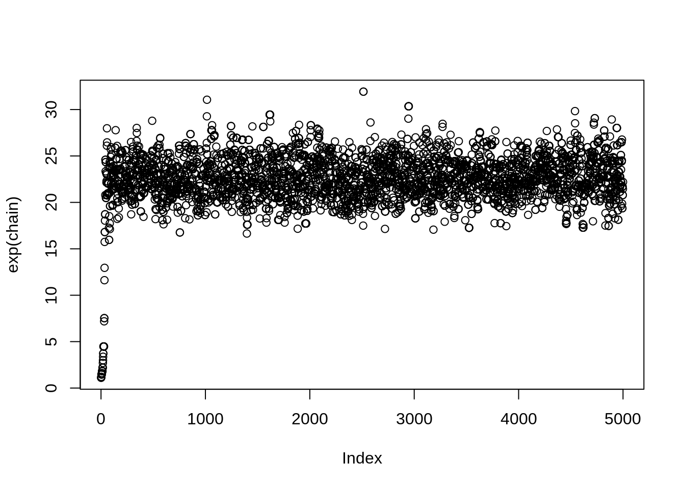
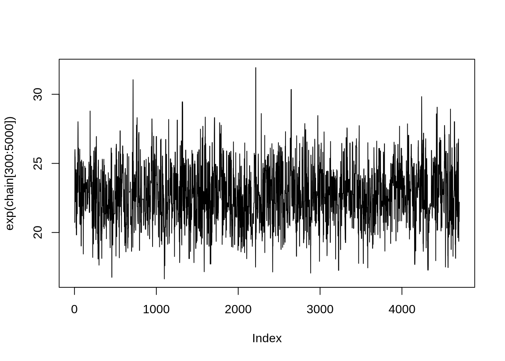
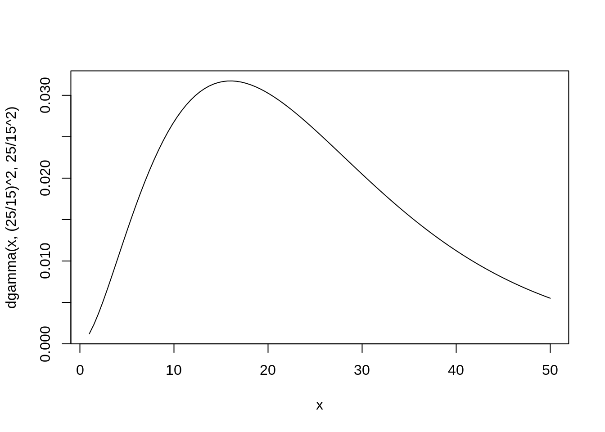
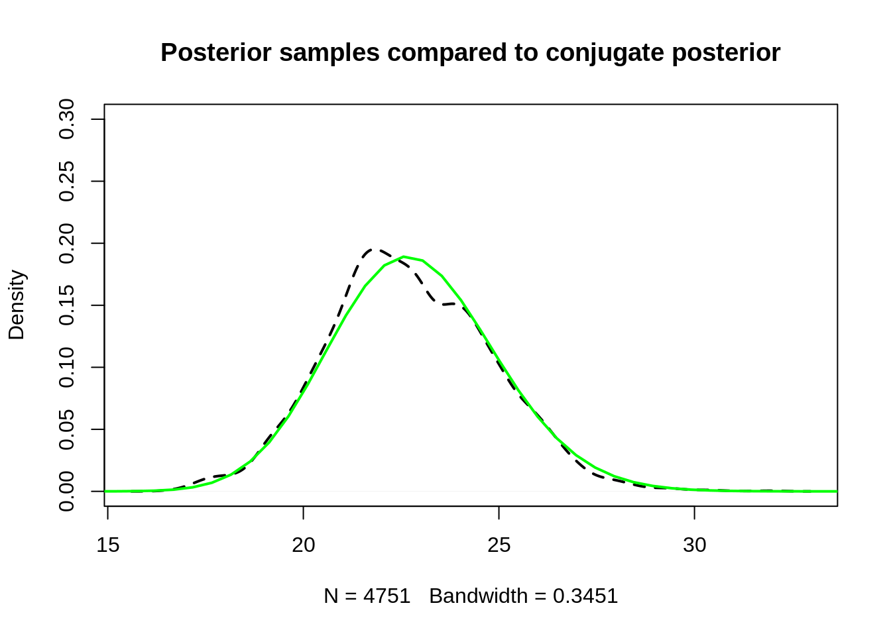
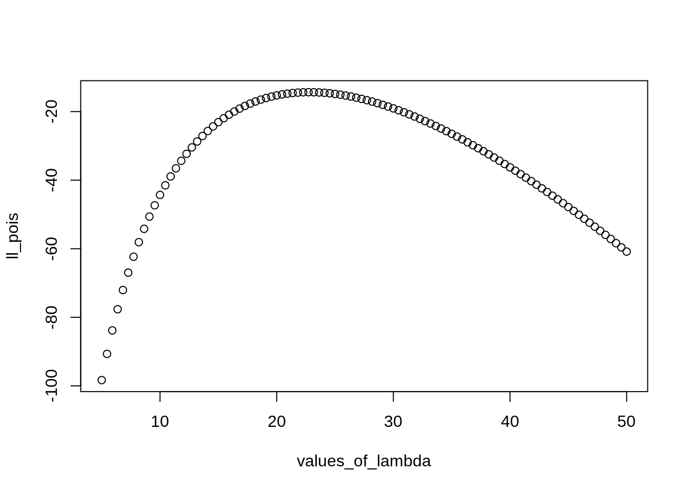
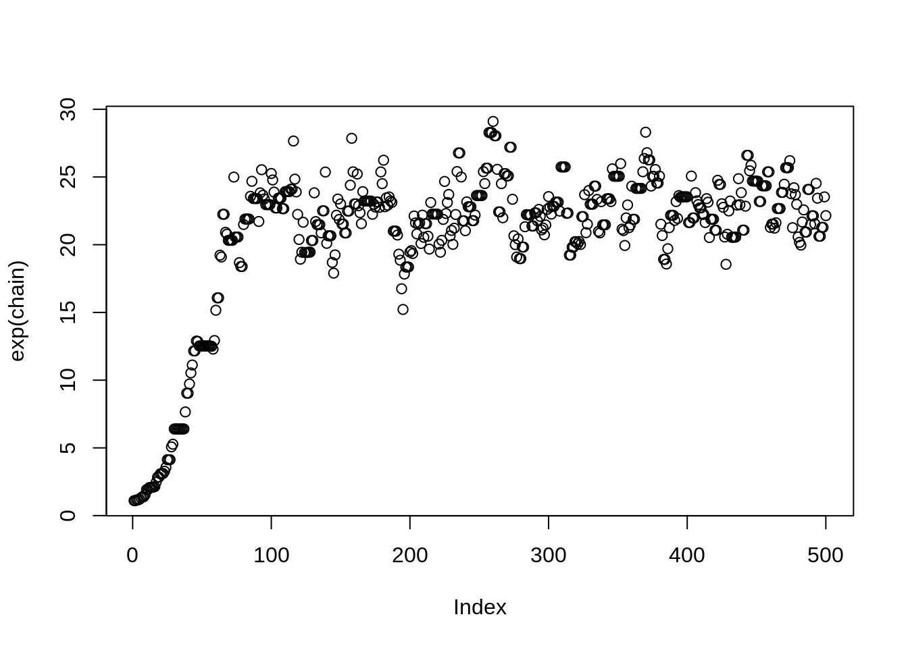

This is a quick description of one way to write the Metropolis algorithm in R.
The full code is here, with a description of each part below. The chunk below is ready to copy and paste for your own experiments!
# Helper function to create log likelihoods
make_likelihood <- function(f = dpois){
force(f)
function(data, ...) sum(f(data, ..., log = TRUE))
}
## define likelihoods for our problem
poisson_loglike <- make_likelihood(f = dpois)
normal_loglike <- make_likelihood(f = dnorm)
## function to use these to calculate the value of the numerator in Bayes Formula
numerator <- function(v, data = xs) {
poisson_loglike(data, lambda = exp(v)) + normal_loglike(v, mean = 1, sd = 2)
}
# proposal function to make new parameter values.
propose_new <- function(x, sig_tune) rnorm(1, mean = x, sd = sig_tune)
# start value
metropolis <- function(dataset,
n_samples,
tune_parameter,
start_value,
numerator_function = numerator){
chain <- numeric(n_samples)
chain[1] <- 0.1
for (i in 2:length(chain)){
start <- chain[i-1]
new <- propose_new(start, sig_tune = tune_parameter)
r <- exp(numerator_function(new, data = dataset) -
numerator_function(start, data = dataset))
p_accept <- min(1, r)
chain[i] <- ifelse(runif(1) < p_accept, new, start)
}
return(chain)
}set.seed(1859)
xs <- rpois(5, 27)
chain <- metropolis(dataset = xs, n_samples = 5000, tune_parameter = 0.2, start_value = 0)
plot(exp(chain))
When we visualize the chain to see the samples, we see what we hope to find: the sampler is bouncing around, drawing samples from the entire posterior.
Note at the beginning the sampler has to first “travel” to find the right range of values. These samples are not part of our answer, and aren’t useful to us. This is why we often drop the first few samples; these are known as the “burn-in” samples.
set.seed(1859)
xs <- rpois(5, 27)
plot(exp(chain[300:5000]), type = "l")
This is a very common way of visualizing the posterior samples; this is called the “trace plot”. You want it to look like this: a “fuzzy caterpillar”. This means that the sampler is moving around the posterior easily, and not getting stuck in a particular zone.
exp()?In our model we applied the log link to the mean of the poisson distribution. Look back at our function called numerator, which calculates the likelihood times the prior. You’ll see that we are estimating the posterior for a, which is the exponent on \(\lambda\).
Our model is:
\[ \begin{align} y &\sim \text{Poisson}(e^{a}) \\ a &\sim \text{Normal}(1, 2) \end{align} \]
Our chain samples are for the parameter \(a\). So if we want the posterior distribution of the mean of the Poisson, we need to use exp to transform our chain.
We have a very straightforward way of checking our work: we can calculate the conjugate posterior for our chain and compare that to our samples:
First we need to imagine a new model, with a different prior:
\[ \begin{align} y &\sim \text{Poisson}(\lambda) \\ \lambda &\sim \text{Gamma}(25^2/15^2, 25/15^2) \end{align} \]
The prior looks like this:
curve(dgamma(x, (25/15)^2, 25/15^2), xlim = c(1, 50))
And here is the comparison of the two:
# plot of the prior
# plot of chain samples
plot(density(exp(chain[250:5000])), ylim = c(0,.3), lty = 2, lwd = 2,
main = "Posterior samples compared to conjugate posterior")
# plot of prior
curve(dgamma(x, (25/15)^2 + sum(xs),
25/15^2 + length(xs)),
xlim = c(1, 50),
add = TRUE, lwd = 2, col = "green")
And the match is pretty close!
# Helper function to create likelihoods
make_likelihood <- function(f = dpois){
force(f)
function(data, ...) sum(f(data, ..., log = TRUE))
}This function is the gnarly part. This is a function that takes a function and returns another function. In this case, we give make_likelihood() a probability density function, like dnorm, dpois, dlnorm etc. The output is a function that will calculate the log-likelihood using that distribution.
For example, we can make a function to calculate the likelihood of some data using the Poisson distribution.
poisson_loglike <- make_likelihood(dpois)In this example, poisson_loglike() is a new function. It has two arguments:
data, which is a vector of observations we want to use to calculate the log likelihood.... which means “any arguments that the distribution function needs”. Some will only need one argument (e.g. dpois() needs only lambda) an others would need two or more (for example dnorm() needs mean and sd)Experiment to convince yourself that this function does what you expect
poisson_loglike(xs, lambda = 5)## [1] -98.31556poisson_loglike(xs, lambda = 6)## [1] -82.53091poisson_loglike(xs, lambda = 9)## [1] -51.30788poisson_loglike(xs, lambda = 30)## [1] -19.05498We can even use this function to perform a simple grid search for lambda:
values_of_lambda <- seq(5,50, length.out = 100)
ll_pois <- sapply(values_of_lambda, function(x) poisson_loglike(data = xs, lambda = x))
plot(values_of_lambda, ll_pois)
This hopefully helps you to see that this function accomplishes the same thing as our earlier work on likelihoods.
normal_loglike <- make_likelihood(f = dnorm)
normal_loglike(5, mean = 10, sd = 2)## [1] -4.737086The next step creates another likelihood generating function. This time the input is only one number. We’re going to use this function to calculate the likelihood of proposals according to the prior, so we are testing only one number every time. normal_loglike() still contains a sum, but since there is only one number the output is the exact same as using dnorm(5, mean = 10, sd = 2, log = TRUE)
normal_loglike(5, mean = 10, sd = 2)## [1] -4.737086dnorm(5, mean = 10, sd = 2, log = TRUE)## [1] -4.737086## function to use these to calculate the value of the numerator in Bayes Formula
numerator <- function(v, data = xs) {
poisson_loglike(data, lambda = exp(v)) + normal_loglike(v, mean = 1, sd = 2)
}This numerator() function adds together the log-likelihood of the data and the prior, calculated for some value v.
Finally we need a proposal function. This takes the current value and returns a proposition.
propose_new <- function(x, sig_tune) rnorm(1, mean = x, sd = sig_tune)We can check this one to make sure it works as we intend
propose_new(10, sig_tune = 2)## [1] 10.16376propose_new(10, sig_tune = 2)## [1] 10.80047propose_new(10, sig_tune = 2)## [1] 9.108949propose_new(10, sig_tune = 2)## [1] 11.83946The larger sig_tune the farther the new value will be from the old one.
Now we just need to generate proposals and decide wether to accept or reject them. We do this by generating a proposal, then apply the numerator function to the proposal and the original value, then calculating the acceptance probability.
chain <- numeric(500)
chain[1] <- 0.1
for (i in 2:length(chain)){
start <- chain[i-1]
new <- propose_new(start, 0.1)
r <- exp(numerator(new) - numerator(start))
p_accept <- min(1, r)
chain[i] <- ifelse(runif(1) < p_accept, new, start)
}
plot(exp(chain))